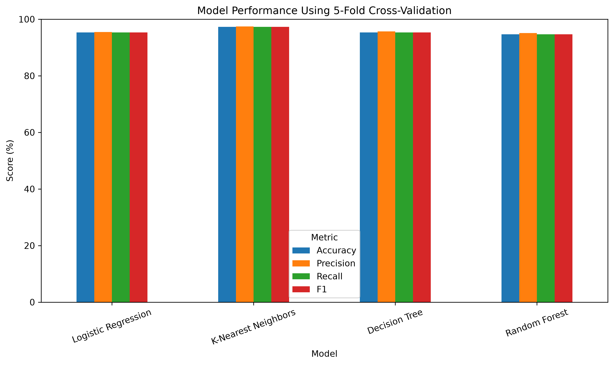
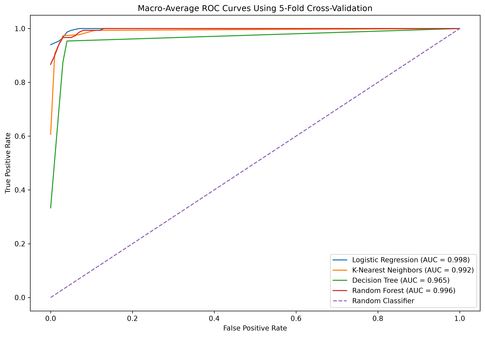
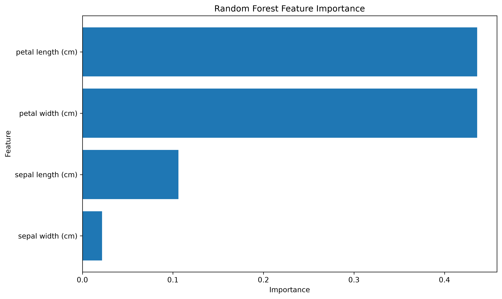

Observations: 150
Variables: 5
| sepal length (cm) | sepal width (cm) | petal length (cm) | petal width (cm) | |
|---|---|---|---|---|
| count | 150.000 | 150.000 | 150.000 | 150.000 |
| mean | 5.843 | 3.057 | 3.758 | 1.199 |
| std | 0.828 | 0.436 | 1.765 | 0.762 |
| min | 4.300 | 2.000 | 1.000 | 0.100 |
| 25% | 5.100 | 2.800 | 1.600 | 0.300 |
| 50% | 5.800 | 3.000 | 4.350 | 1.300 |
| 75% | 6.400 | 3.300 | 5.100 | 1.800 |
| max | 7.900 | 4.400 | 6.900 | 2.500 |
| sepal length (cm) | sepal width (cm) | petal length (cm) | petal width (cm) | |
|---|---|---|---|---|
| sepal length (cm) | 1.000 | -0.118 | 0.872 | 0.818 |
| sepal width (cm) | -0.118 | 1.000 | -0.428 | -0.366 |
| petal length (cm) | 0.872 | -0.428 | 1.000 | 0.963 |
| petal width (cm) | 0.818 | -0.366 | 0.963 | 1.000 |
| Model | Accuracy | Precision | Recall | F1 | Accuracy Std |
|---|---|---|---|---|---|
| Logistic Regression | 95.33 | 95.49 | 95.33 | 95.32 | 4.52 |
| K-Nearest Neighbors | 97.33 | 97.45 | 97.33 | 97.33 | 2.49 |
| Decision Tree | 95.33 | 95.72 | 95.33 | 95.31 | 3.40 |
| Random Forest | 94.67 | 95.12 | 94.67 | 94.64 | 2.67 |

| Model | Macro AUC |
|---|---|
| Logistic Regression | 0.998 |
| K-Nearest Neighbors | 0.992 |
| Decision Tree | 0.965 |
| Random Forest | 0.996 |

| Feature | Importance |
|---|---|
| petal length (cm) | 0.4361 |
| petal width (cm) | 0.4361 |
| sepal length (cm) | 0.1061 |
| sepal width (cm) | 0.0217 |
